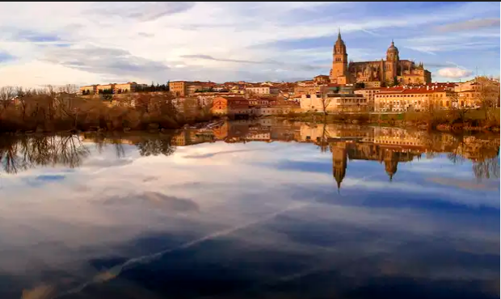

INDEX
CATEGORIA
CATEGORIA2
BARES Y RESTAURANTES
DOCUMENTACION Y ENLACES
BARES Y RESTAURANTES DE SALAMANCA

Bares de Tapeo y pinchos
El Globo -> Pincho típico el Marianito , y tostas
La Dama -> Especialidad las cazuelitas
Ana->pinchos variados patatas meneadas pincho típido en salamanca y paloma (corteza con ensaladilla)
Gastrobar -> de Vinos( En el mercado de San Juan)
Cervantes
Rufus
Bambu
Restaurantes
Casa Paca
Hoja 21
Canijo
Tapas 2.0 y Tapas 3.0
Corte & Cata
OroViejo
Cafés
Tío Vivo
Capitan Harok
cafe-becquer
Novelty
Mandala
Cambalache
PosadalasAnimas